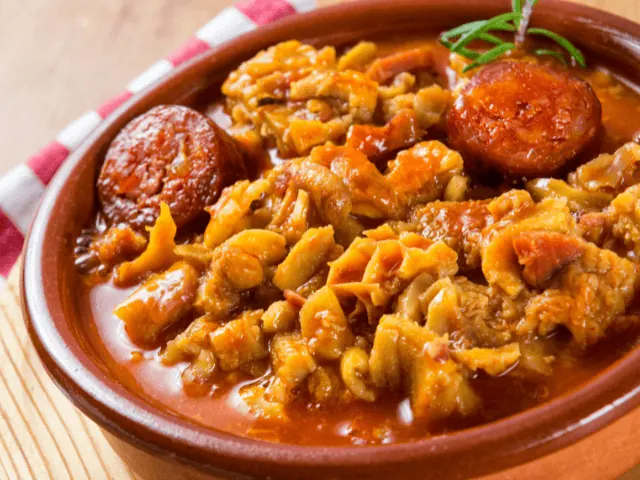
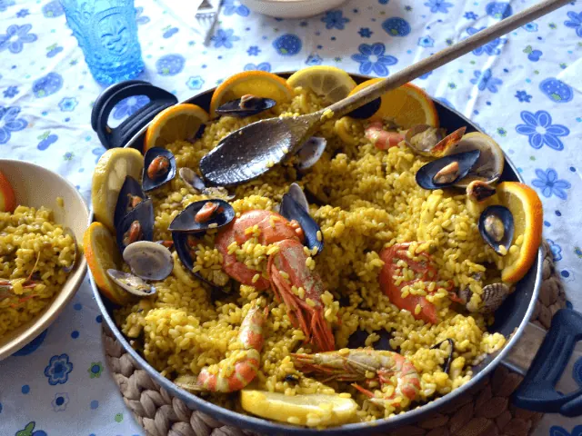
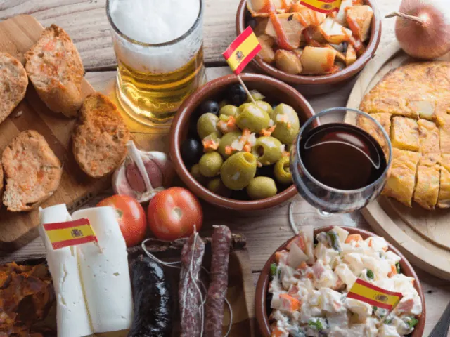
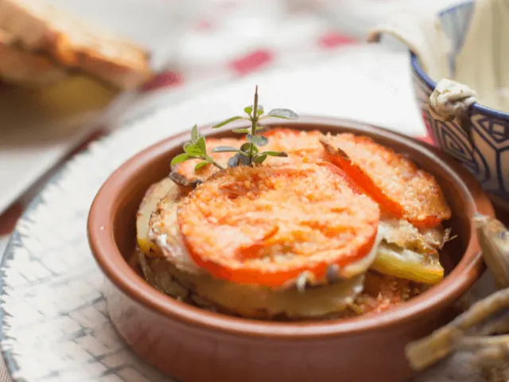

Op Zoek naar Iets Nieuws? Probeer Deze Spaanse Restaurants
Gepubliceerd op 9 februari 2023, bijgewerkt op 20 oktober 2023
Onderdeel van de gids Restaurants in Nijmegen

Heb jij de Nederlandse keuken inmiddels wel gezien, en ben je op zoek naar iets nieuws? Dan kunnen de culinaire hoogstandjes uit de Spaanse keuken jou absoluut verrassen. Van een heerlijke paella tot een veelzijdige tortilla, de meeste van onze kunnen deze Spaanse gerechten absoluut op waarde schatten. Doe jij een stedentrip naar Nijmegen, en zoek je een Spaans specialiteitenrestaurant? Dan ben je bij ons aan het juiste adres. Wij deden recentelijk namelijk onderzoek naar de beste Spaanse restaurants in Nijmegen.
Ben jij op zoek naar een sfeervol Spaans restaurant met een uitgebreide menukaart? Ga dan eens eten bij Casa Valencia of restaurant NACIONAL. Kan jij ook de Zuid-Amerikaanse keuken waarderen, of ben je simpelweg op zoek naar iets unieks? Dan mag je restaurants Don Pablo en Mi Barrio absoluut niet overslaan.
Hecht jij veel waarde aan sfeer of misschien juist aan de veelzijdigheid van de menukaart? Wij namen alle relevante aspecten van enkele Spaanse restaurants in Nijmegen onder de loep. Zoek jij dus nog een eettentje om culinair te genieten? Dan dien je de Spaanse restaurants uit dit artikel absoluut in overweging te nemen. Laten we dus snel de verschillende mogelijkheden onder de loep gaan nemen.

Overzicht Tapas restaurants in Nijmegen
Spaans genieten in Nijmegen – Dit zijn 5 populaire restaurants
De Spaanse keuken stelt eigenlijk nooit teleur. Maar jij wilt natuurlijk wel in het lekkerste Spaanse restaurant eten dat in Nijmegen te vinden is. Wij zochten het compleet voor je uit. Onderstaand bespreken we maar liefst vijf verschillende Spaanse restaurants in Nijmegen. We bespreken de pluspunten van ieder restaurant, zodat jij na het lezen van dit artikel een weloverwogen keuze kunt maken.
1. Casa Valencia
Het eerste Spaanse restaurant op onze lijst is het sfeervolle Casa Valencia. De authentieke Spaanse sfeer van dit restaurant is absoluut bijzonder te noemen. Van het servies tot de inrichting van het restaurant, alle aspecten dragen bij aan de bijzondere Spaanse sfeer.
Nu ben jij ongetwijfeld benieuwd waarom klanten zo enorm te spreken zijn over Casa Valencia. Dit heeft diverse redenen. Onderstaand een greep uit de reviews van dit restaurant.
- Gevestigd in hartje Nijmegen
- Uitermate sfeervol restaurant
- Een ruime menukaart met veel Spaanse specialiteiten
- Uitermate goede service
We kunnen wel spreken van een enorm goed en veelzijdig tapasrestaurant. Bezoek jij de prachtige stad Nijmegen? Dan moet een bezoekje aan restaurant Casa Valencia absoluut op de planning staan.

2. Fingerz
Ook het Spaanse restaurant Fingerz is te vinden in het centrum van Nijmegen. Het is een sfeervolle plek waar je heerlijk Spaans kunt eten. Van empanadas tot echte Spaanse Iberico ham, de menukaart is enorm veelzijdig.
Klanten zijn vooral gek op Fingerz vanwege de onderstaande pluspunten.
- Gevestigd in het levendige centrum van Nijmegen
- Huiselijke sfeer
- Betaalbaar
- Fantastische gerechten gemaakt van hoogwaardige producten
- Vriendelijke bediening
Ben jij dus op zoek naar een sfeervol Spaans restaurant, die bovendien ook nog betaalbaar is? Dan ben je bij Fingerz aan het juiste adres.

3. Don Pablo
Het derde restaurant op onze lijst is net even anders dan de overige eettentjes. Het gaat namelijk wel om een Spaanstalig land, maar voornamelijk de Mexicaanse keuken staat hier centraal. Maar ook diverse Argentijnse specialiteiten verfraaien het menu. We kunnen dus wel spreken van een veelzijdig Zuid-Amerikaans restaurant.
Don Pablo ligt tegenover het populaire Valkhofpark. Het is een ideale plek in het centrum van Nijmegen om heerlijk culinair te genieten. Een romantisch diner voor twee of juist een groots familiediner? Bij Don Pablo is alles mogelijk.
Maar wat maakt dit restaurant nu echt bijzonder? Onderstaand enkele eigenschappen van deze populaire plek.
- Vrolijk ingericht in Zuid-Amerikaanse stijl
- Swingende salsamuziek
- In de Cuba Lounge is er ook een dansvloer om de heupen los te gooien
- Naast heerlijk eten ook fantastische cocktails
Ben jij dus op zoek naar een plek waar je niet alleen heerlijk kunt eten, maar ook nog eens los kunt gaan op je favoriete salsamuziek? Dan moet jij Don Pablo zonder twijfel een keer gaan bezoeken.

4. NACIONAL
Aan de prachtige rivier de Waal vind je het populaire restaurant NACIONAL. Zowel voor een heerlijk ontbijt, lunch als diner kun je hier terecht. Dit restaurant is zoveel meer dan enkel een plek om lekker te eten. Het is een lokaal punt waar mensen en culturen met elkaar worden verbonden.
Het veelzijdige menu en de hoge kwaliteit van de gerechten is absoluut noemenswaardig. Ook de onderstaande aspecten vallen gasten op wanneer ze eten bij restaurant NACIONAL.
- Zowel de Spaanse als Franse keuken worden vertegenwoordigd
- Uitermate stijlvol restaurant
- Ook een uitgebreide borrelkaart aanwezig
- Oog voor detail
Wil jij ook de culinaire hoogstandjes uit de Spaanse keuken ervaren? Dan is NACIONAL the place to be!
5. Mi Barrio
Het laatste restaurant op onze lijst is Mi Barrio. Deze tent bevindt zich in de altijd gezellige Indische buurt in Nijmegen. Het betreft een sfeervol restaurant met een uitgebreide menukaart. Gasten zijn vooral fan van deze plek vanwege:
- Knusse huiselijke sfeer
- Veel vegetarische opties
- Uitgebreid en zeer gevarieerd menu
- Spaans-Mediterraan met een vleugje Aziatisch
Klinkt dit jou ook als muziek in de oren? Overweeg dan zeker deze unieke tent een keer te bezoeken. Het kwalitatief goede eten met een unieke twist zal jou zonder twijfel verrassen!